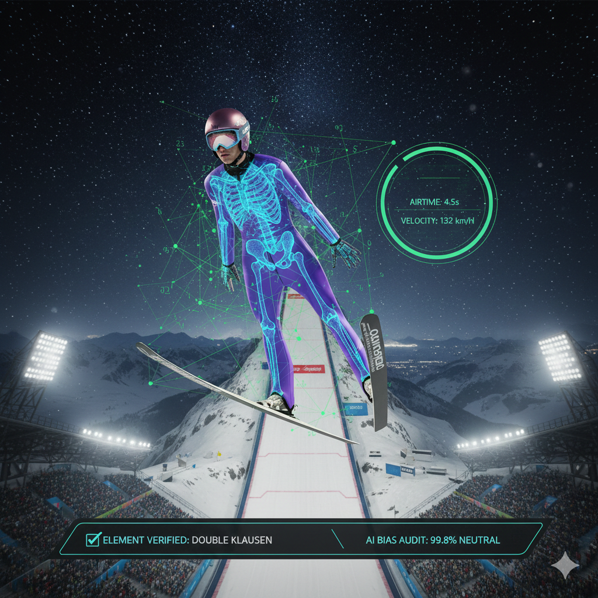
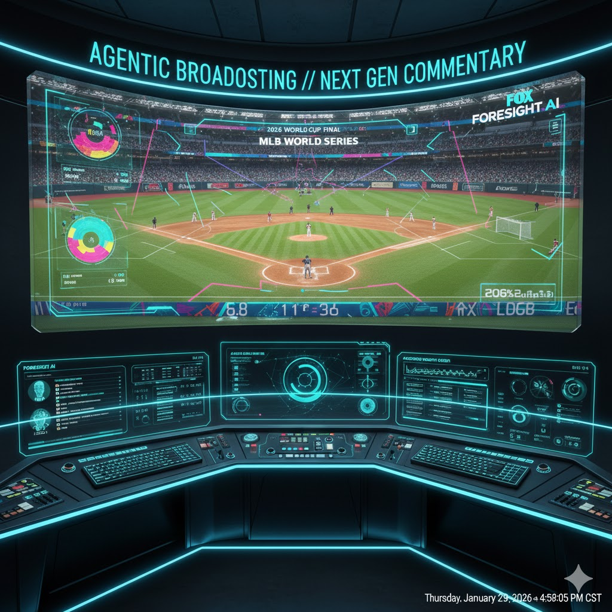

Latest Insights
-
February 14, 2026
The Intelligent Games: How AI Rebuilt the 2026 Winter Olympics
The "Cloud Olympics" are over. See how 8K Digital Twins, AI Judging, and FPV drones have transformed the 2026 Milano Cortina Games into the most data-driven event in sports history.
 Read the Deep-Dive -
February 9, 2026
SCANNING PROSPECT DATA...
The Digital Scout: How Sportlogiq and NHL EDGE are Redefining Talent ID
From "gut feelings" to "Hard Truths." See how Vision AI and infrared sensors are digitizing the next generation of NHL stars.
Read more -
January 26, 2026

Agentic Broadcasting: "Connie" and "FOX Foresight"
Inside the tech stack of the 2025 World Series: How AI agents are preventing glitches and giving announcers "superpowers."
Read more -
January 18, 2026
The End of the Concession Line: WaitTime AI
Computer vision is finally fixing the longest lines in sports. See how Ohio Stadium is using AI to track crowd density.
Read more -
January 17, 2026
Athlete Performance Optimization: STATSports AI
How AI is now predicting athlete fatigue and preventing injuries by analyzing sleep and training data.
Read more -
January 16, 2026
Seamless Security: Evolv Express Gen2 Brings AI Screening
Traditional metal detectors are relics. Learn how AI is speeding up stadium entry at SoFi and beyond.
Read more